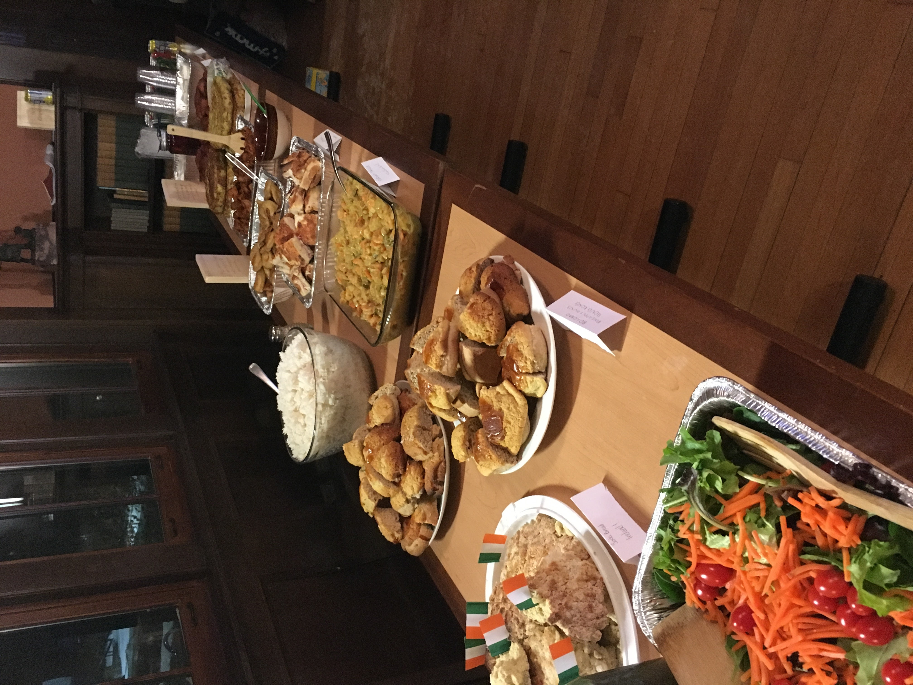
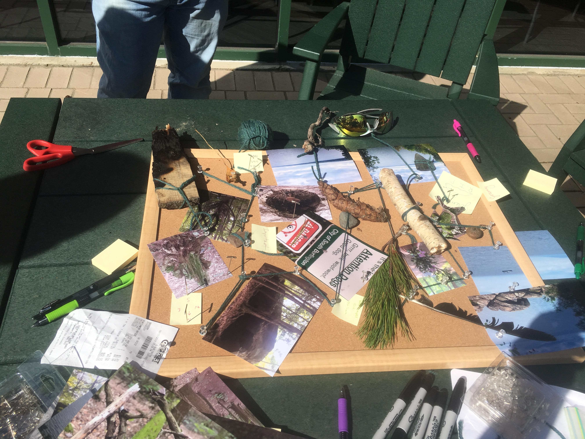
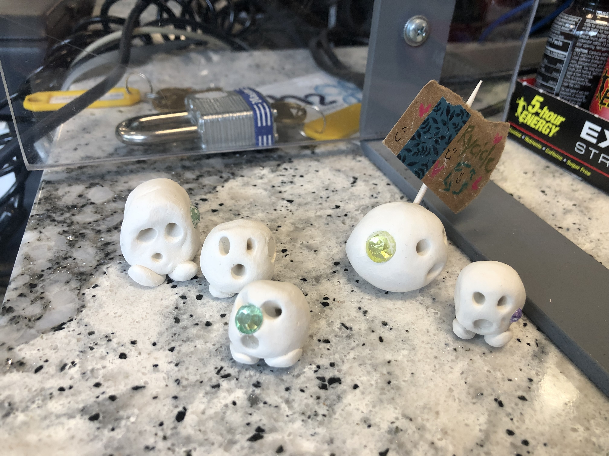
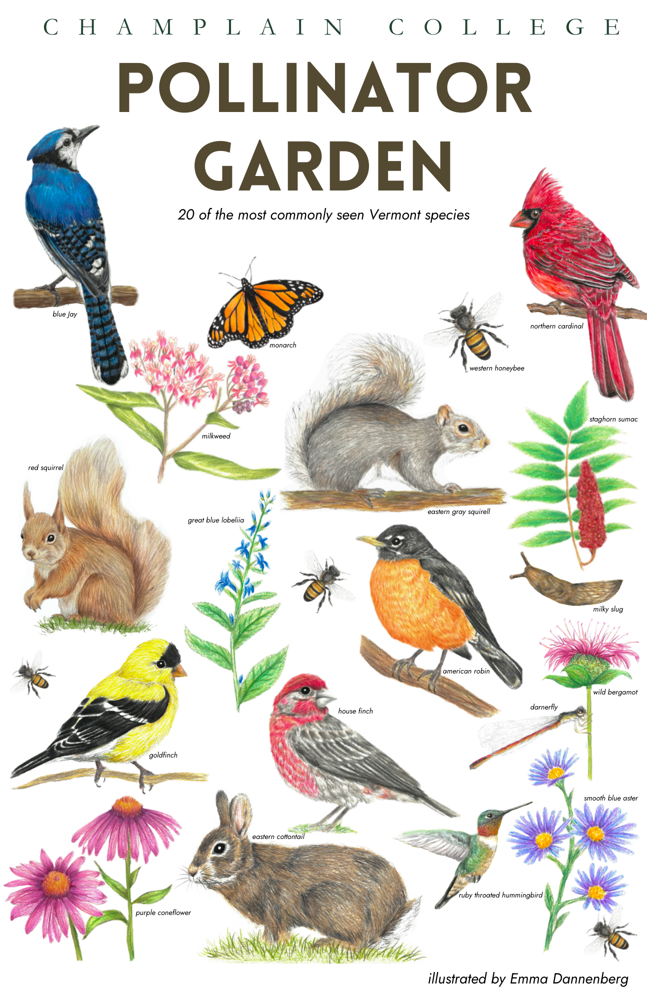
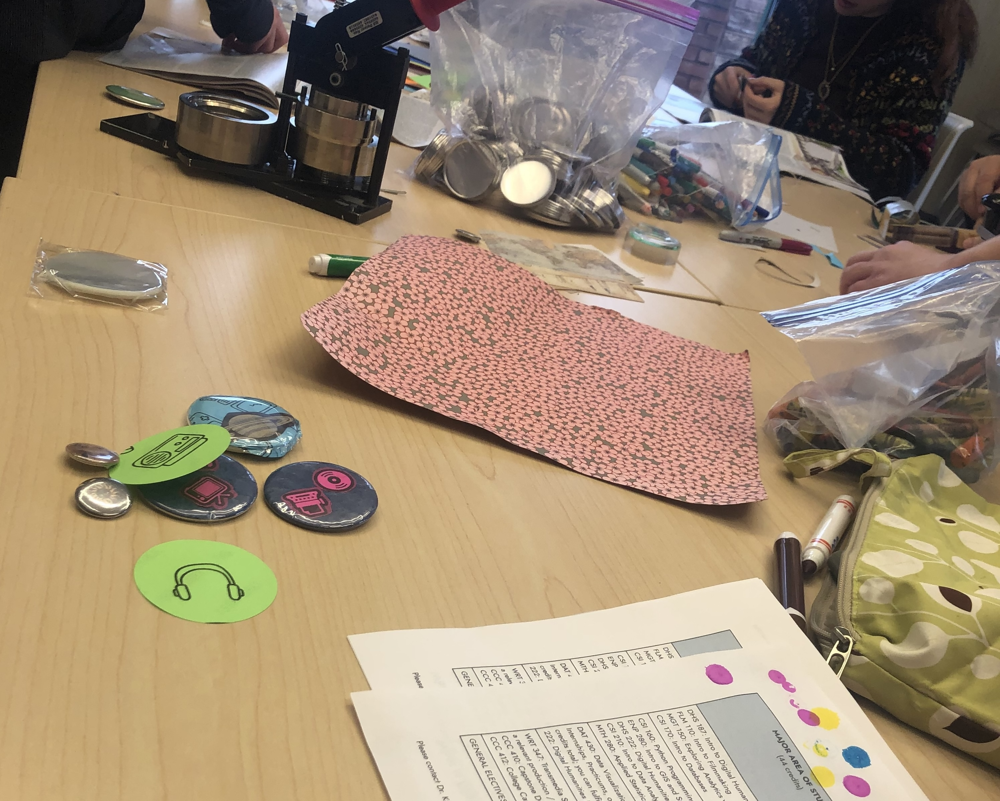
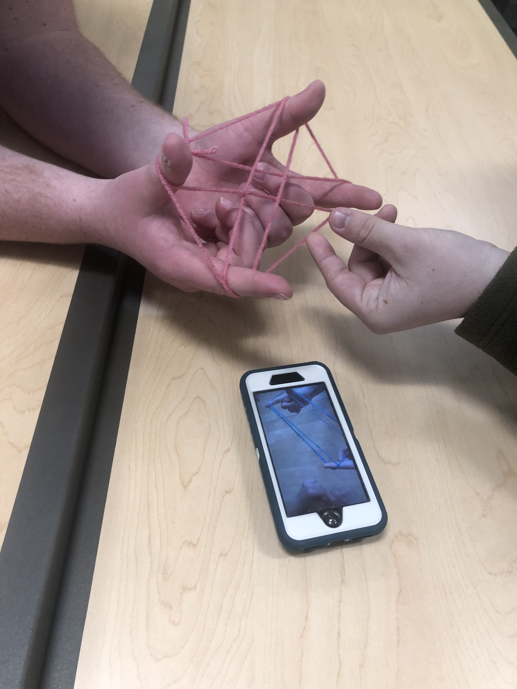
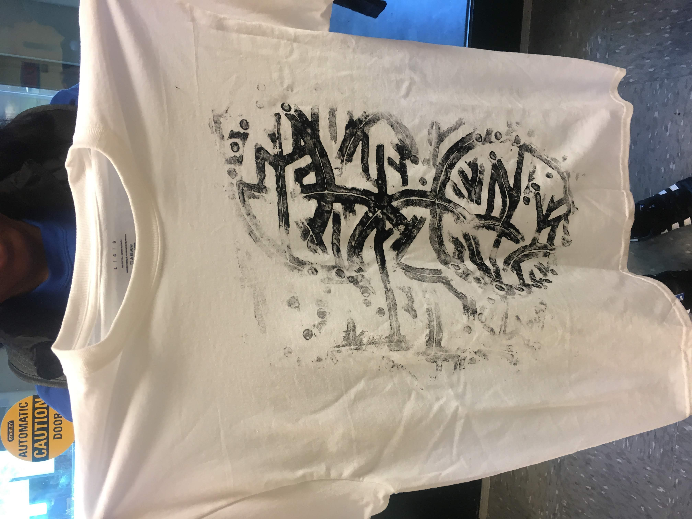
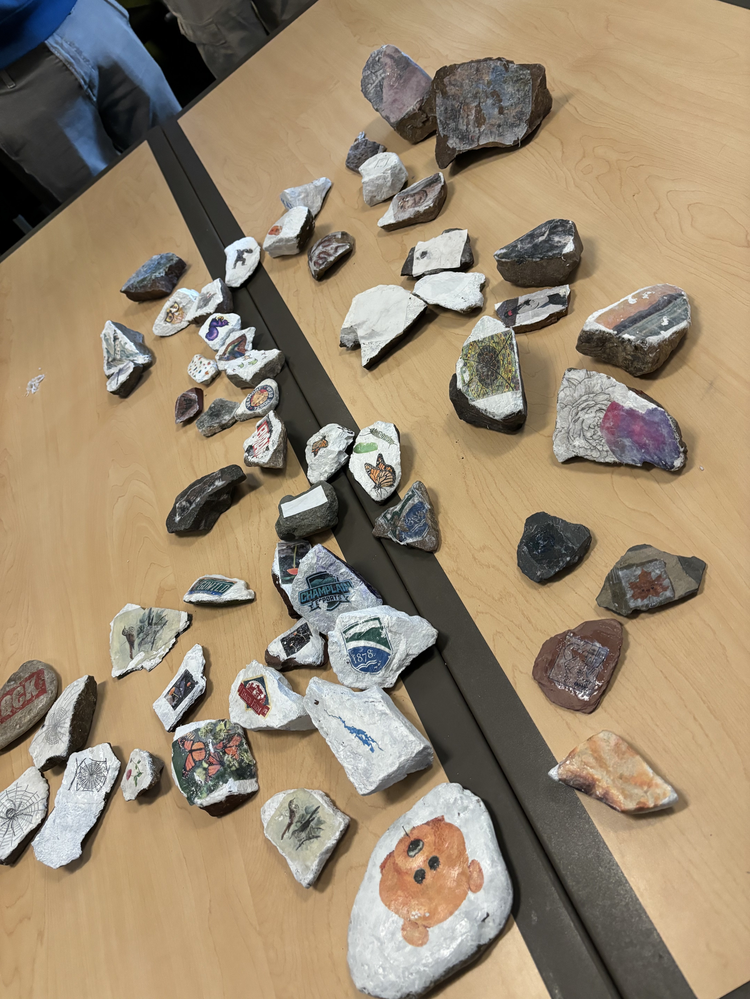
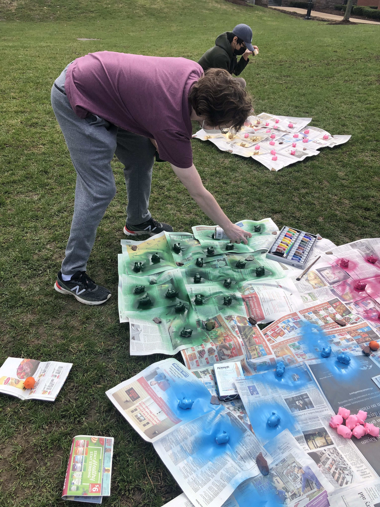
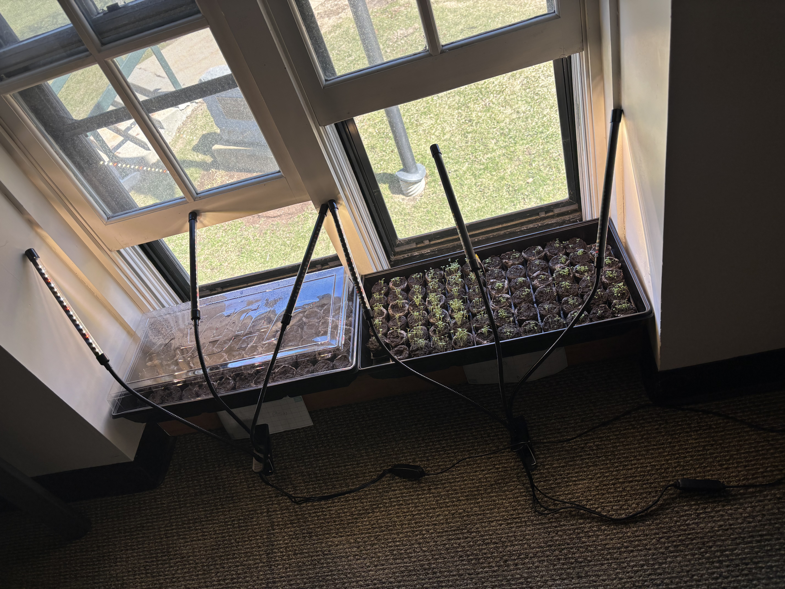

Teaching
Twenty-three years of teaching across disciplines, institutions, and contexts.













making and inquiry
- Field Methods: Printmaking in Public
- First Year Inquiry: Making Alternate Reality Games
- Interdisciplinary Perspectives: Fake Meat and the Future of Food
- new Field Methods: Sonic Data Worlds
- new Interdisciplinary Perspectives: Escape Rooms and Collaborative Design
- co-taught Interdisciplinary Sandbox
- Concepts of the Self
- co-taught Senior Capstone
place, identity, world
- Global Studies Senior Seminar
- Connecting Place and Identity
- The Global Condition formerly Global Studies I: Technology and Development
bodies, technology, culture
- Bodies: The Posthuman
- Bodies: Walking
- Heroines and Heroes
- Theoretical Perspectives: Posthumanism Goes to the Movies
- Scientific Revolutions: SyFy
- Media Psychology developed for the Psychology Program
- Introduction to Digital Humanities developed for the Digital Humanities Program
- Aesthetic Expressions